inlinekeyword
geometryMergeStrategy selector
Defines how the geometries of the resulting shapes are combined:
| append | Default. Appends the geometry as is. |
| unify | Uses the Boolean union operation. |
| recompose | Reconnects subdivided shapes (see Shape Recomposition). |
Syntax options
| Rule | Name of a rule. |
| subdivision | A subdivison operation (see Geometry Subdivision). |
| { operations } | A sequence of shape operations in curly brackets. |
The inline keyword triggers the immediate derivation of the specified rule, subdivision operation, or shape operation sequence. The resulting shapes are then automatically merged into a single shape that replaces the current shape.
In case it results in a single shape, it is taken as is. If it results in multiple shapes, their geometries are combined according to the geometryMergeStrategy. By default (if no strategy is specified) the geometries are just appended.
If the inlined shapes have conflicting material attributes, each shape's material is written to the geometry, meaning that all materials are preserved. For other attributes, the value of the current shape is kept if the inlined shapes have conflicting values or if more than one set operation has occurred.
Concept
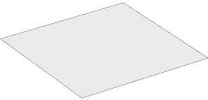
This is the initial shape.
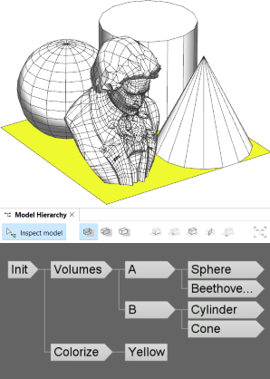
Two rules are applied to the initial shape: Volumes splits the shape and inserts different assets, while Colorize sets a yellow color. The rules modify the input shape independently and do not affect each other.
This can be observed in the Model Hierarchy where both rules represent the root of a separate shape subtree. The leaf shapes in the full shape tree collectively form the visible model.
Init -->
Volumes
Colorize
Colorize --> color(1,1,0) Yellow.
Volumes --> split(x) { '0.5: A | '0.5: B }
A --> split(z) { '0.5: Sphere | '0.5: Beethoven }
B --> split(z) { '0.5: Cylinder | '0.5: Cone }
Sphere --> primitiveSphere
Cylinder --> primitiveCylinder
Cone --> primitiveCone
Beethoven --> i("beethoven.obj")
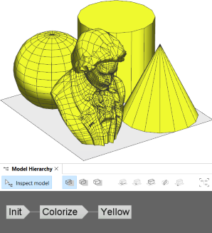
Inlining Volumes enables the two rules to be sequentialized, allowing Colorize to take the combined result of Volumes as input.
Essentially, an inlined rule can be used like a built-in shape operation (e.g., extrude) to directly modify the current shape.
Init -->
inline Volumes
Colorize
The subtree generated by an inlined rule (e.g., Volumes) is collapsed and removed from the Model Hierarchy, providing control over the derivation order as well as the structure of the shape tree.
Geometry merge strategy
The correct geometryMergeStrategy depends on the modeling objective:
| append | Default. Used to simply collect the geometries of multiple shapes and put them into a single mesh. No geometry cleanup is performed and all components are kept as is. |
| unify | Used to combine the geometries of intersecting shapes with Boolean operations. Intersecting faces get topologically connected and inner faces are removed. |
| recompose | Used to topologically recombine the geometries of subdivided shapes. Shapes are automatically reconnected at shared vertices and edges, see Shape Recomposition. The strategy can be used to recombine shapes created with, for example, the split or comp operations. |
Related
Examples
Mesh Topology
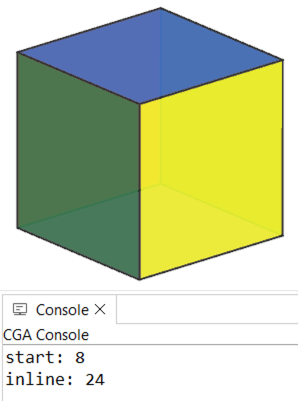
Init -->
primitiveCube
print("start: " + geometry.nVertices)
inline comp(f) { all: SetColor }
print("inline: " + geometry.nVertices)
rampValue = comp.index/comp.total
SetColor -->
set(material.opacity, 0.9)
color(colorRamp("spectrum", rampValue))
Inlining is used to combine the colored faces of a cube back into a single shape. By default, the faces are simply appended and do not share vertices, resulting in three times as many vertices as before.
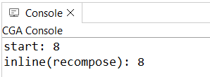
Init -->
primitiveCube
print("start: " + geometry.nVertices)
inline(recompose) comp(f) { all: SetColor }
print("inline(recompose): " + geometry.nVertices)
Using the recompose strategy, vertices are automatically merged, restoring the original topology.
Alternatively, the modify operation can be used instead of an inlined comp.
Best of Two Alternatives (append)
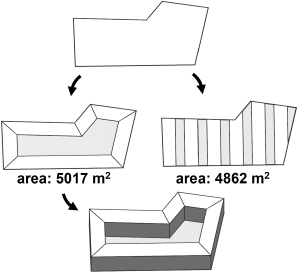
Init -->
inline { LayoutA LayoutB }
ChooseLayout
LayoutA --> offset(-15, border) tag("LayoutA")
LayoutB --> split(x) { 15: tag("LayoutB") Lot.
| ~10: NIL }*
taggedArea(name) =
sum(comp(f) { isTagged(name): geometry.area })
ChooseLayout -->
case taggedArea("LayoutA") > taggedArea("LayoutB"):
inline Extract("LayoutA")
Mass
else:
inline Extract("LayoutB")
Mass
Extract(name) -->
comp(f, noAlign) { isTagged(name)= Extract. }
Mass --> extrude(30)
Two different and tagged layouts are generated. Using inline they are combined into a single shape. The comp function and tags are then used to compare the area of both layouts and continue only with the larger one.
F-Shaped Building (recompose)
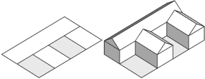
Init -->
split(z, noAdjust)
{ 7: House
| ~1: split(x) { ~7: NIL | 7: House }* }
House -->
extrude(5)
comp(f) { side: Fac. | top: roofGable(40) Roof. }
Without inlining: The initial shape is split into an F-shape. Each piece is separately extruded and a separate detached roof is built on top.
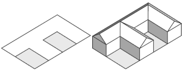
Init -->
inline(recompose) FShapePieces
cleanupGeometry(all, 0) // removes inner edges
House
FShapePieces -->
split(z, noAdjust)
{ 7: Done.
| ~1: split(x) { ~7: NIL | 7: Done. }* }
With inlining: The FShapePieces rule is inlined, which combines all pieces into a single shape. With recompose the geometries of the subdivded shapes are automatically reconnected and the cleanupGeometry operation can be used to merge the pieces into a single footprint polygon. This results in a single extruded mass and a single joint roof.
Twist and Taper (recompose)
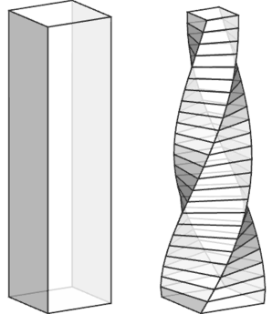
attr Twist_Angle = 180
attr Taper_Factor = 0.5
attr Resolution = 24
Init -->
extrude(100)
tag("Mass")
inline(recompose) split(y) { '1/Resolution: Slice }*
// delete inner faces created by the split:
modify(f) { !isTagged("Mass"): NIL }
Slice --> modify(f,noAlign) { top: RotateRescale }
RotateRescale with(
a := split.index / (Resolution-1)
f := (1-a) + a*Taper_Factor
)-->
r(0,(split.index+1)*Twist_Angle/Resolution,0)
s('f,'1,'f)
center(xz)
The extruded mass is split into slices, and the top of each slice is rotated and scaled using modify. Because the split operation is inlined using recompose, the slices are reconnected, forming a continuous twist and taper.
To remove the inner faces, which are created by the split operation to close the volumes, the extruded mass is first tagged, and afterwards, all faces without this tag are deleted.
Spiral Steps (unify)
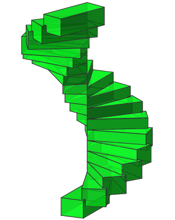
Init -->
inline(unify) StepsRec(18)
color(0, 1, 0, 0.8)
StepsRec(nSteps) -->
case nSteps > 0:
Step
r(0, 20, 0)
t(0, 0.18, 0)
StepsRec(nSteps-1)
else:
NIL
Step --> s(0.4, 0.3, 1) primitiveCube
The StepsRec(nSteps) rule recursively generates the steps of the spiral stairs. When the rule is inlined using unify, the steps are combined into a single shape and their geometries merged into a single watertight mesh using Boolean 3D union operations.
Inline and Tags
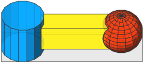
Init -->
inline(unify) split(x) { 3: A | 4: B | 3: C }
comp(f) { isTagged("A"): Blue
| isTagged("B"): Yellow
| isTagged("C"): Red }
A --> primitiveCylinder tag("A")
B --> t(-1, 0.5, 0.75)
s(6, 2, 1.5)
primitiveCube
tag("B")
C --> primitiveSphere tag("C")
Blue --> color("#0399F5")
Yellow --> color("#FADB19")
Red --> color("#FF360A")
The initial shape is split into three parts, with a different primitive geometry asset inserted into each part and then tagged. Inlining the split using unify merges them into a single watertight mesh while preserving the tags on the individual face components.
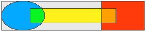
Init -->
inline(unify) split(x) { 3: A | 4: B | 3: C }
comp(f) { isTagged("A") && isTagged("B"): Green
| isTagged("B") && isTagged("C"): Orange
| isTagged("A") : Blue
| isTagged("B") : Yellow
| isTagged("C") : Red }
A --> primitiveDisk tag("A")
B --> t(-1, 0, 0.75)
s(6, 0, 1.5)
tag("B")
C --> tag("C")
Blue --> color("#0399F5")
Green --> color("#09DE1F")
Yellow --> color("#FADB19")
Red --> color("#FF360A")
Orange --> color("#FA9100")
The same example in 2D. All original edges and tags are preserved, allowing to identify the intersecting parts using tags.